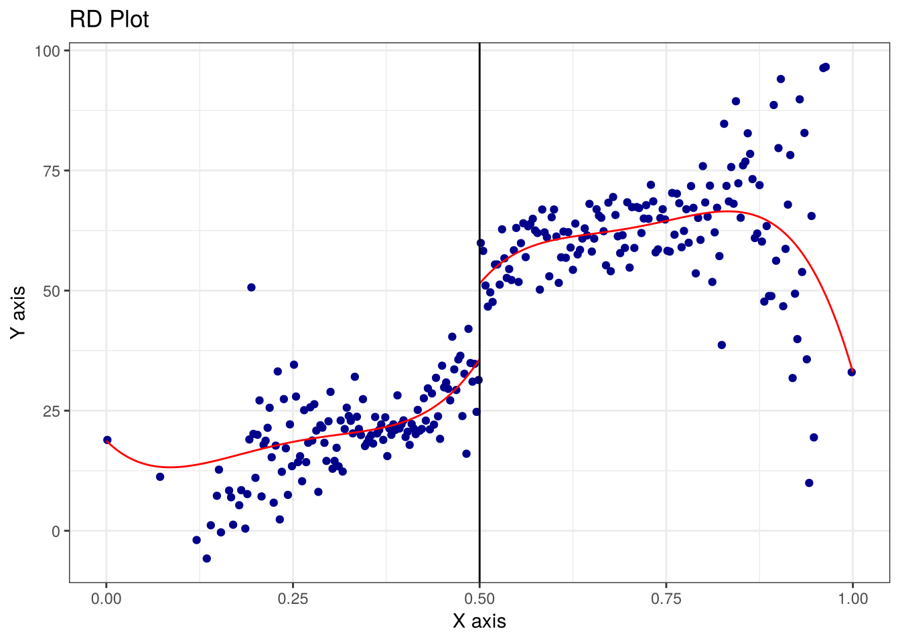

Participants should be able to explain what continuity of the potential outcomes at the cutoff buys, estimate a sharp regression discontinuity (RD) with global and local polynomials and see how much the answer depends on those choices, run the two standard validity checks (covariate smoothness and the McCrary density test), and say what the estimand is — a local effect at the threshold — and why that is sometimes exactly what you want.
Time
Block
0:00
Recap: conditional independence and common support
0:05
Concepts: running variable, cutoff, continuity, sharp vs fuzzy, bandwidth, manipulation
0:20
Walkthrough: Lee–Moretti–Butler — plot, estimate with four specifications, density test
The design. Treatment \(D\) is a deterministic function of a running variable \(X\) relative to a cutoff \(c_0\): \(D = 1[X \geq c_0]\) (sharp regression discontinuity) or jumps in probability there (fuzzy). Units just above and just below the cutoff differ in treatment but, if nothing else jumps at \(c_0\), in nothing else.
In plain English
Some rule says: score 50 or above and you get the treatment, 49 and you don’t. A person at 49 and a person at 50 are practically identical — a little luck on the test is all that separates them — yet one got treated and one didn’t. Compare those two groups and you have something close to an experiment, at least near the line.
Identification by continuity.\(E[Y^0 \mid X]\) and \(E[Y^1 \mid X]\) must be continuous at \(c_0\). Then \[\delta_{SRD} = \lim_{x \downarrow c_0} E[Y \mid X = x] - \lim_{x \uparrow c_0} E[Y \mid X = x].\] No conditional-independence assumption, no need to observe confounders: everything that matters is a smooth function of \(X\) except the treatment.
In plain English
The only assumption is that nothing else changes abruptly at the cutoff. People’s background characteristics, motivation, whatever — all of it should drift smoothly across the line. If the outcome jumps at the line anyway, the treatment did it.
Estimation is a bias–variance problem. You need the two limits. Global polynomials use all the data but let far-away observations drive the fit at the cutoff (Gelman and Imbens’s warning against high-order polynomials). Local linear regression within a bandwidth \(h\) is the modern default, with rdrobust choosing \(h\) and correcting for bias. The honest report shows several.
In plain English
You want to know the height of the two curves exactly at the cutoff. Use lots of data far from the cutoff and you get a precise but possibly wrong answer, because far-away points bend the curve. Use only data close to the cutoff and you get the right shape but a noisier estimate. The bandwidth is that dial; show more than one setting.
Threats and checks. If units can precisely manipulate \(X\) (sorting just above a test-score cutoff), continuity fails. Check that the density of \(X\) is smooth at \(c_0\) (McCrary) and that pre-determined covariates do not jump there. Fuzzy RD is instrumental variables with the cutoff as instrument, which is next session’s topic.
In plain English
The design breaks if people can nudge themselves across the line — retaking a test until they pass, say. The tell-tale sign is a pile-up of observations just on the favorable side of the cutoff. Also check that things decided before treatment (age, prior income) don’t jump at the line; if they do, something other than the rule is going on.
The Lee–Moretti–Butler (LMB) question. Do close elections reveal whether politicians converge to the median voter (Downs) or diverge to their party’s preferences? In a 50–50 district the party that barely won is as-good-as random; if the winner’s voting score jumps at the 50% line, parties do not converge.
A cloud of points rising with Democratic vote share, with a visible vertical jump at 0.5 of roughly 20–40 ADA points. score is the ADA liberalism score of the sitting representative; lagdemocrat is whether a Democrat won the previous election, which is the treatment.
Step 2 — The naive and the close-election comparisons
Estimate Std. Error t value Pr(>|t|) CI Lower CI Upper
(Intercept) 31.19576 1.333991 23.38529 5.880428e-80 28.57420 33.81732
lagdemocrat 21.28387 1.951233 10.90791 3.988266e-26 17.45445 25.11330
DF
(Intercept) 454.0000
lagdemocrat 912.8907
All elections: ≈ 31.5. Within ±2 points of the cutoff: ≈ 21.3 (standard error, SE, ≈ 2; n = 915). The simple comparison is contaminated by district ideology; the close-election estimate is the book’s headline number.
Step 3 — Polynomial specifications, global and local
Interact the treatment with the centered running variable so each side gets its own slope.
linear, all linear, <U+00B1>5 quadratic, all
37.69478 19.82333 18.07216
quadratic, <U+00B1>5
25.57964
Linear/all ≈ 37.7; linear/±5 ≈ 19.8; quadratic/all ≈ 18.1; quadratic/±5 ≈ 25.6. The sign and rough size are robust; the exact number is not. Show the room all four and ask which they would put in the abstract. The honest answer is “the local ones, with the bandwidth stated.”
Mass points detected in the running variable.
Call: rdplot
Number of Observations: 13577
Kernel: Uniform
Polynomial Order Est. (p): 4
Left Right
------------------------------------------------
Number of Observations 5670 7907
Number of Effective Obs 5670 7907
Bandwidth poly. fit (h) 0.5 0.5
Number of bins scale 1 1
Bins Selected 184 158
Average Bin Length 0.003 0.003
Median Bin Length 0.003 0.003
IMSE-optimal bins 17.0 29.0
Mimicking Variance bins 184.0 158.0
Relative to IMSE-optimal:
Implied scale 10.824 5.448
WIMSE variance weight 0.001 0.006
WIMSE bias weight 0.999 0.994
library(rdrobust)r <-rdrobust(y = lmb$score, x = lmb$lagdemvoteshare, c =0.5, cluster = lmb$id)summary(r)
Call: rdrobust
Sharp RD estimates using local polynomial regression. Std. errors are clustered (13577 clusters).
Number of Obs. 13577
BW type mserd
Kernel Triangular
VCE method CR1
Left Right
Number of Obs. 5670 7907
Eff. Number of Obs. 2244 1982
Order est. (p) 1 1
Order bias (q) 2 2
BW est. (h) 0.088 0.088
BW bias (b) 0.139 0.139
rho (h/b) 0.637 0.637
Clusters (g) 5670 7907
Unique Obs. 2878 3279
=====================================================================
Point Robust Inference
Estimate z P>|z| [ 95% C.I. ]
---------------------------------------------------------------------
RD Effect 18.575 7.599 0.000 [13.497 , 22.881]
=====================================================================
rdplot(y = lmb$score, x = lmb$lagdemvoteshare, c =0.5)

A conventional local-linear estimate of ≈ 18.6 (SE 2.0), a bias-corrected robust 95% CI of about [13.5, 22.9], and a data-driven MSE-optimal bandwidth of ≈ 0.088 vote-share points on each side (about 2,200 effective observations per side). rdplot draws the binned means with separate fits on each side — the figure to put on the slide.
Step 5 — Is the density smooth at the cutoff?
If incumbents could engineer bare wins, there would be a pile-up just above 0.5.
# pip install rddensityfrom rddensity import rddensitydens = rddensity(X=lmb["lagdemvoteshare"], c=0.5)print(dens.test) # t_jk is the jackknife test statistic, p_jk its p-value
t_asy NaN
t_jk 0.683352
p_asy NaN
p_jk 0.494385
dtype: float64
library(rddensity)dens <-rddensity(X = lmb$lagdemvoteshare, c =0.5)summary(dens)
Manipulation testing using local polynomial density estimation.
Number of obs = 13577
Model = unrestricted
Kernel = triangular
BW method = estimated
VCE method = jackknife
c = 0.5 Left of c Right of c
Number of obs 5670 7907
Eff. Number of obs 1856 2161
Order est. (p) 2 2
Order bias (q) 3 3
BW est. (h) 0.073 0.096
Method T P > |T|
Robust 0.6834 0.4944
$Estl
Call: lpdensity
Sample size 5670
Polynomial order for point estimation (p=) 2
Order of derivative estimated (v=) 1
Polynomial order for confidence interval (q=) 3
Kernel function triangular
Scaling factor 0.417648791985857
Bandwidth method user provided
Use summary(...) to show estimates.
$Estr
Call: lpdensity
Sample size 7907
Polynomial order for point estimation (p=) 2
Order of derivative estimated (v=) 1
Polynomial order for confidence interval (q=) 3
Kernel function triangular
Scaling factor 0.582424867413082
Bandwidth method user provided
Use summary(...) to show estimates.
$Estplot
Bin counts hover around 200–300 on both sides of 0.50 with no spike; the density test does not reject (jackknife \(t ≈ 0.68\), \(p ≈ 0.49\)). Also check that a pre-determined covariate (for example lagdemvoteshare from two elections back, or district demographics if available) does not jump at the cutoff.
Exercises
Placebo cutoffs. Re-estimate the linear ±5-point specification at fake cutoffs of 0.40, 0.45, 0.55 and 0.60. What do you find, and what would it mean if one of them were large?
Bandwidth curve. Loop over bandwidths from ±1 to ±25 vote-share points in steps of 1 using the local-linear specification. Plot the estimate and its 95% CI against bandwidth. Where does it stabilize? Compare to the rdrobust choice.
Fuzzy preview. Suppose the data had an actual Democrat indicator democrat for the current term (it does). What is the first-stage relationship between lagdemocrat and democrat at the cutoff? Estimate it the same way as Step 3. Why is this a sharp rather than a fuzzy design for the score question, and when would it become fuzzy?
Solutions
Solutions (click to expand)
1. Placebo estimates at 0.40, 0.45, 0.55 and 0.60 are ≈ −2.6, 1.7, 3.1 and −4.8 with SEs around 2 — small, mixed in sign, and nowhere near the 20-point jump at 0.50. A large placebo jump would suggest the relationship between vote share and ideology is non-linear in ways the specification does not capture, or that something else happens at that value.
for c in [0.40, 0.45, 0.55, 0.60]: sub = lmb[(lmb.lagdemvoteshare > c -0.05) & (lmb.lagdemvoteshare < c +0.05)].copy() sub["above"] = (sub.lagdemvoteshare >= c).astype(int); sub["xc"] = sub.lagdemvoteshare - cprint(c, fit(sub, "score ~ above * xc").params["above"].round(2))
2. At ±1 point the estimate is ≈ 32 with SE 5.6; it drops to ≈ 22 at ±3, ≈ 20 at ±5, ≈ 18 at ±10, then drifts back up to ≈ 21, 23 and 24 at ±15, ±20 and ±25 as far-away districts bend the linear fit. The SE shrinks monotonically. The rdrobust bandwidth (≈ ±9 points) lands in the stable region.
3.lagdemocrat predicts democrat with a jump of ≈ 0.42 at the cutoff — winning narrowly last time makes you much more likely to hold the seat (incumbency). The score question is sharp because treatment is defined as who won last time. It would be fuzzy if the treatment of interest were “a Democrat holds the seat now,” since that only jumps partially at the cutoff; then $= $ (jump in score) / (jump in Democrat), which is an IV estimate.
Facilitator notes
Facilitator notes (click to expand)
Start with the picture. RDD is the one design where the plot is the argument. Spend five minutes on Step 1 and make people say what they see before any regression.
Misconception: RDD needs the running variable to be random. It needs potential outcomes to be continuous at the cutoff. Vote share is not random; what matters is that barely winning is not systematically different from barely losing.
Misconception: more data is better. Step 3’s global polynomials show far-away observations changing the estimate at the cutoff. This is the one session where throwing data away is the right move.
If rdrobust is not installed. Skip Step 4 and point to the bandwidth curve in Exercise 2, which teaches the same thing by hand.
Discussion prompts. (a) What is the population the LMB estimate applies to? (Districts near 50–50.) Is that a limitation or the point? (b) What would manipulation look like in an election context?
Bridge to next session. A fuzzy RD is an IV. Next session generalizes: any variable that moves treatment and affects the outcome only through treatment can play the cutoff’s role.